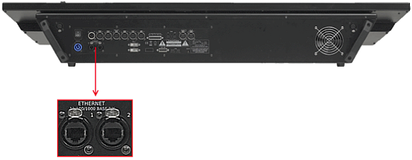

The grandMA2 console has two Ethernet ports on its rear panel.

Location Ethernet ports
Ethernet Port 1
Information:
The Ethernet port 1 is called eth0 in the grandMA2 software.
Information:
The Ethernet port 1 can be used for the following network protocols:
- MA-Net2
- ETC Net2
- Pathport
- sACN
- Shownet
- Kinet1
- CITP
- PSN
Requirement:
STP (shielded twisted pair) cable with RJ45 connector, min. Cat 5e.
To connect Ethernet port 1:
Connect one end of an Ethernet cable to the Ethernet 1 port.
Connect the other end to a suitable switch.
Connect other grandMA2 equipment to the switch and turn on the power on the switch.
Ethernet is connected to port 1.
Ethernet Port 2
Information:
The Ethernet port 2 is called eth1 in the grandMA2 software.
Information:
The Ethernet port 2 can be used for the following network protocols:
- Art-Net
- CITP
Information:
The IP address is set by default in a 2.x.x.x range. An IP address is required in a 2.x.x.x or 10.x.x.x range for Art-Net.
Requirement:
STP (shielded twisted pair) cable with RJ45 connector, min. Cat 5e.
To connect Ethernet port 2:
Connect one end of a Ethernet cable to the Ethernet 2 port.
Connect the other end to a suitable switch.
Connect other grandMA2 equipment to the switch and turn on the power on the switch.